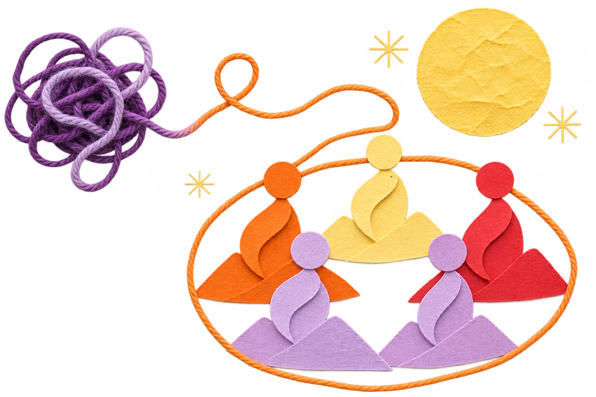

Play with presence
Sthir Saturdays
Hear yourself amid all the advice. Leave with a next move that feels like yours.
Sixty minutes of play, reflection and choice-making with a diverse group.

A choice on your mind… for a while?
Plenty of advice. Still unsure what’s yours?
Choosing subjects, stepping into work or exploring a business idea? Bring your curiosity and a choice you’re sitting with.
At Sthir Saturdays, play with presence and hear your own thinking while staying open to others. Small, playful experiences give you room to try, notice and choose before taking your next step where the stakes feel higher.
A glimpse into the room
What happens in the room?
Curated games, shared reflection and room to try again.
Through applied improv, practise listening, responding and making choices with others. Then use tools from the Designing Your Life approach to shape one small experiment for your week.
Come with curiosity. Leave with something to try.
Who is running this?
Your host, Shalu
Shalu Ahuja is an engineer, educator and Designing Your Life Certified Coach, with 25+ years in leadership roles at American Express, BCG and Optum.
Six years of coaching parents and young adults through identity transitions shape her work at Sthir: bringing play, reflection and practical experiments to choices that don’t have an obvious “right” answer.
The story behind SthirHmm… still…
Before you step in
Do I need any experience?
No. Come with curiosity. You don’t need improv experience or a polished answer.
Who is this for?
Young adults exploring subjects, careers or business ideas, and anyone curious about practising choices through play.
Is this therapy or career counselling?
This is a facilitated space for play, reflection and choice-making practice. It does not provide therapy or tell you which career to choose.
Laptop or phone?
A laptop or desktop, please. We use Zoom gallery view to see, listen and work with one another.
Do I need to commit to more sessions?
Start with the Saturday listed here. You can decide what to explore next after experiencing the room.
Why is it free?
Shalu wants more people to practise discernment earlier in life. This is her way of sharing that learning. Bring openness, respect for the group and your full participation.
You don’t need the whole plan.
Find one thing worth trying next.
Join a Saturday12 December 2026 · 8:30–9:30 PM IST